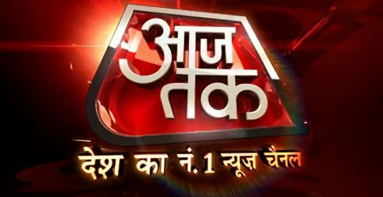
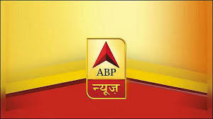

|  |
India-TV channel known for its bold content and huge network of reporters and stringers. The channel run by Indian company Information TV (ITV) Media Group. Famous news anchor Deepak Chaurasia also adjunct with this news channel. |
 |
Indian Broadcast Network) -7 is a 24×7 Hindi news channel propriety of IBN18 Broadcast Limited, subsidiary of Network 18 Ltd. The channel led by Rajdeep Sardesai, a well-known news anchor graceful by Padma Shri. Recently MD of IBN-7 “Aashutosh” leaves the channel to join AAP (Aam Aadmi Party). The channel slogan is "Babak Khauff". |
 |
India TV founded on May 20, 2004 by renowned face Rajat Sharma and Wife Ritu Dhawan. The channel headquarter based in Noida, Uttar Pradesh, India. The channel is a propriety of Independent News Service Private Limited. Rajat Sharma known for anchoring the famous TV serial Aap Ki Adalat on Zee TV and Janta Ki Adalat on STAR TV. The channel slogan is Aap Ki Awaaz (Voice of Public). |
Republic TV is a free-to-air Indian right-wing[1] news channel launched in May 2017. It was co-founded by Arnab Goswami and Rajeev Chandrasekhar, before the latter relinquished his stake in May 2019, leaving Goswami the majority stakeholder.[2] Chandrasekhar was an independent legislator from the National Democratic Alliance who later joined the Bharatiya Janata Party and Goswami was the former editor-in-chief of Times Now. The venture was funded primarily by Chandrashekhar through his company Asianet News. |
Zee News is a Hindi-language news channel owned by the Essel Group.It is associated with several other sister news channels which provide coverage in Hindi, English and several regional languages of India. Zee News was launched on 27 August 1999, as Zee Sports Ltd. The company was reincorporated on 27 May 2004, as Zee News Ltd.In 2013, Zee News Ltd changed its name to Zee Media Corporation Limited. The Zee News channel is the flagship channel of the company. |
|  |
ABP News is an Indian Hindi news channel owned by ABP Network. It is a free to air TV channel founded in 1998. It was formerly known as STAR News before being acquired by ABP Group. ABP Live is an Indian English news website owned by ABP Network [1] It is also available on YouTube; its YouTube channel name is ABP News. ABP Network was established in 30 May 2002 in Andheri East, Mumbai, Maharashtra. |